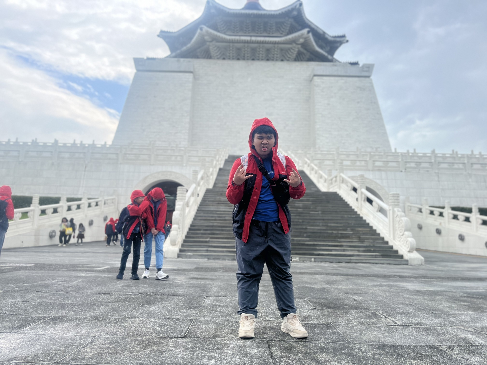
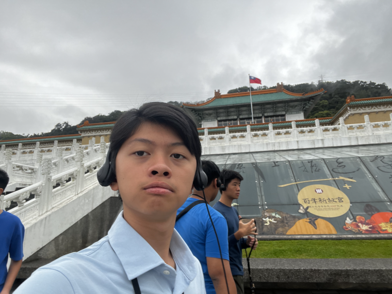

Chiang Kai Shek Memorial Hall & National Palace Museum

Chiang Kai Shek Memorial Hall ini adalah tempat penghargaan atau simbol penghormatan pada Chiang Kai Shek diri sendiri. Di sini, juga ada banyak peninggalan seni dan artifak-artifak berharga dari zaman dahulu agar bisa semakin membangkitkan kebanggaan generasi muda Taiwan dengan negaranya.

National Palace Museum ini adalah tempat koleksi artifak-artifak dan barang-barang dari sejarah yang berharga dari sejarah Tiongkok pada zaman dahulu. Oleh karena itu, peran dari museum ini adalah agar generasi muda negara Taiwan dapat lebih bangga dengan negaranya dengan kehebatan dan keunikan negara mereka.